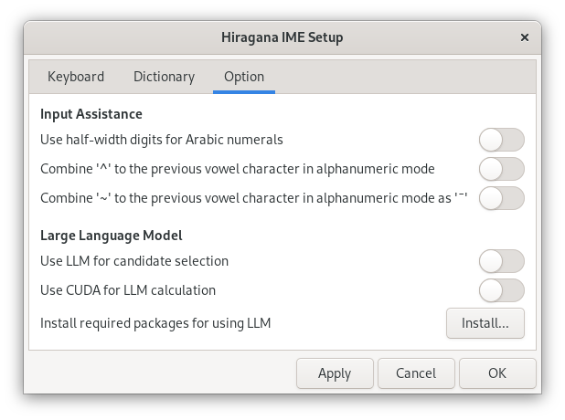
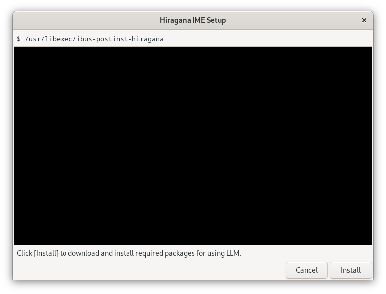

Installation
To set up Hiragana IME, follow the steps below:
- Install the Hiragana IME software package
- Add Hiragana IME to the input sources
- Enable Hiragana IME
- Install additional components for using LLM
Install the Hiragana IME software package
If you use Fedora or Ubuntu, the Hiragana IME package will be automatically downloaded during installation using the dnf or apt command.
Instructions for Fedora
The RPM packages are available in the Copr project at @esrille/releases. To enable this Copr project, enter the following command into a terminal:
sudo dnf copr enable @esrille/releases
To install Hiragana IME, use the following dnf command as usual:
sudo dnf update
sudo dnf install ibus-hiragana
Instructions for Ubuntu
The Debian packages are available in the PPA repository at esrille/releases. To enable this repository, enter the following command into a terminal:
sudo add-apt-repository ppa:esrille/releases
To install Hiragana IME, use the following apt command as usual:
sudo apt update
sudo apt install ibus-hiragana
Change the input method module for Wayland
Ubuntu 21.04 and later, as well as Fedora 25 and later, use Wayland as the default screen rendering system. Wayland is being developed to replace the classic X server.
GNOME is also developing a new input method module for Wayland. However, it is still in the early stages of development. In GNOME 45 or earlier, the surrounding text information sent to input methods is broken. In GNOME 46, the surrounding text information is not sent to input methods at the right time with many applications.
So, we recommend using the IBus input method module even on Wayland. To do so, define GTK_IM_MODULE environment variable in your ~/.bash_profile (in Fedora) or ~/.profile (in Ubuntu) as below.
export GTK_IM_MODULE=ibus
You can check the version of GNOME by opening the GNOME Settings window, then going to About This System-System Details.
Restart your computer
Please restart your computer to apply the changes before proceeding to the next section.
Add Hiragana IME to the input sources
Next, we will add Hiragana IME to the input sources. We call keyboard layouts and input methods collectively as Input Sources on GNOME. The setup process varies depending on your desktop environment.
Instructions for GNOME
On Fedora and Ubuntu, GNOME is the default desktop environment. The Hiragana IME currently works best in GNOME. If you're using GNOME, open Settings and add Japanese (Hiragana IME) to Input Sources in the Keyboard pane.
Instructions for other desktops
Open IBus Preferences, and select the Input Method tab.
Add Hiragana IME to the list of Input Method by selecting the following item:
 Hiragana IME
Hiragana IME
Enable Hiragana IME
In IBus, you can switch between multiple input methods and use them.
To enable Hiragana IME, open the keyboard menu of the desktop shell by clicking the current input method logo like

As for the keyboard layout, Hiragana IME uses the previously selected keyboard layout.
- To use the Japanese keyboard layout, select Japanese from the keyboard menu first, then select Japanese (Hiragana IME).
- To use the US keyboard layout, select English (US) from the keyboard menu first, then select Japanese (Hiragana IME).
When you can't find the keyboard layout you want to use, add your preferred layout to the Input Sources. Currently, Hiragana IME supports three keyboard layouts: Japanese, English (US), and English (Dvorak).
Note: Often, different keyboard designs are used from country to country for each language. In Japan, both Japanese and US keyboards are used. The US keyboard is designed in the United States. Nevertheless, it is also utilized in many other countries by modifying the letters printed on the keycaps.
Install additional components for using LLM
Hiragana IME has a feature to select the most probable conversion candidate using a Large Language Model. To use this feature, the following packages need to be installed:
Hiragana IME runs within a local Python virtual environment (venv). To install the above packages in this venv, follow these steps:
- In Hiragana IME Setup window, open the Option tab:

- Click Install, and the following window will open.

- Click Install to begin the installation. The installation log will appear in the window. Once the installation is finished, the Install button will change to Close. Click Close to exit the window.
- In the Option tab of the Hiragana IME Setup window, select the Use LLM for candidate selection option.
If your PC has an NVIDIA GPU, Hiragana IME can use CUDA to accelerate the LLM calculation. To use CUDA, select the Use CUDA for LLM calculation option as well.
- Click OK to exit the the Hiragana IME Setup window. All the packages you need for using the LLM are now installed.
Hint: In the About dialog box, you can check whether Hiragana IME uses LLM.
Updates
When a new release of the Hiragana IME is available, we will announce it on the Releases page on GitHub. The steps for updating Hiragana IME depend on how you install it. Follow the update steps that correspond to your installation method.
Instructions for Fedora
The Hiragana IME can be updated just like other Fedora packages.
To do so from the command line, use the following dnf command:
sudo dnf update
Instructions for Ubuntu
The Hiragana IME can be updated just like other Ubuntu packages.
To do so from the command line, use the following apt commands:
sudo apt update
sudo apt upgrade
Note: The OS updates may include a newer version of the Python package.
When Python is updated, Hiragana IME will recreate its virtual environment using the updated Python command.
After this upgrade, you will need to reinstall the LLM packages.
If you see a desktop notification like the one below, please proceed to reinstall the LLM-related packages.
Uninstall
The steps for uninstalling Hiragana IME depend on how you install it. Follow the uninstall steps that correspond to your installation method.
Instructions for Fedora
To uninstall Hiragana IME, use the following dnf command:
sudo dnf remove ibus-hiragana
Instructions for Ubuntu
To uninstall Hiragana IME, use the following apt command:
sudo apt remove ibus-hiragana
User data stored in your home directory
The Hiragana IME stores user data in the directory ~/.local/share/ibus-hiragana/.
Under this directory, Hiragana IME stores your input histories, user dictionary file(s), and also its Python virtual environment:
~/.local/share/ibus-hiragana/
├── dic/ # Your input histories
├── my.dic # User dictionary file
└── venv/ # Python virtual environment for Hiragana IME
If you want to install Hiragana IME on other PCs, you can use the copy of the directory dic/ and the file my.dic.
Clean uninstall
If you want to remove all user data after uninstalling Hiragana IME, you can remove the directory ~/.local/share/ibus-hiragana/:
rm -rf ~/.local/share/ibus-hiragana
If you used Hiragana IME with the LLM packages, the tohoku-nlp/bert-base-japanese-v3 files are stored in the directory ~/.cache/huggingface/hub/models--cl-tohoku--bert-base-japanese-v3/.
Please note that these files might be used by other applications that use Transformers.
If you are sure that you want to delete these files, enter the following command into a terminal:
rm -rf ~/.cache/huggingface/hub/models--cl-tohoku--bert-base-japanese-v3